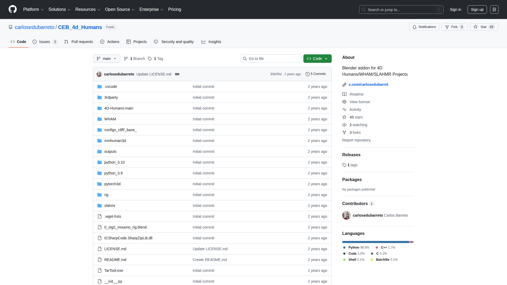

Carlos Eduardo Barreto 開發的 Blender 外掛，整合 4D-Humans / WHAM / SLAHMR 學術項目，在 Blender 中直接將影片轉為 3D 動畫。
| 開發者 | Carlos Eduardo Barreto |
|---|---|
| 平台 | Blender 外掛（需 NVIDIA GPU） |
| 價格 | 免費開源（GitHub）+ Gumroad 付費支持版 |
| GitHub | CEB_4d_Humans |
Blender 骨架動畫，可透過 Blender 內建功能匯出為 BVH / FBX。
| 優點 | 缺點 |
|---|---|
| 免費開源 | 需要 NVIDIA GPU |
| 基於頂級學術研究 | 安裝配置複雜 |
| Blender 原生整合 | 學術項目穩定性有限 |
| SmoothNet 平滑 | 非即時處理 |
可作為免費的影片轉動畫替代方案。在 Blender 中生成骨架動畫後，直接匯出 BVH 進入 Kimodo 後處理 pipeline。retarget 流程在 Blender 內可一併完成。
免費影片轉動畫方案——影片參考用 CEB 4D Humans，文字描述用 Kimodo，互補使用。